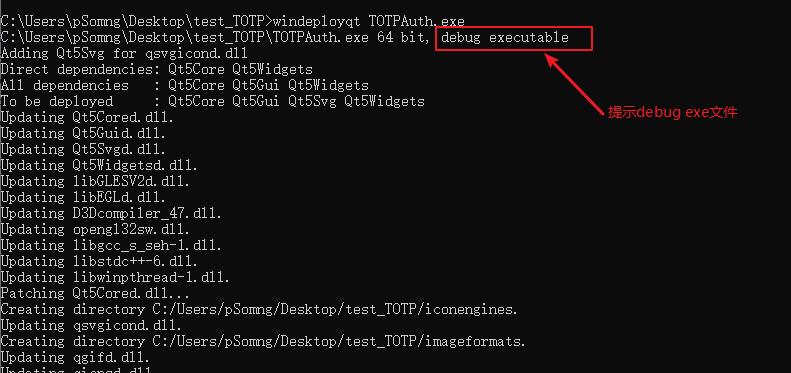

一种解决Qt5发布release文件引发的无法定位程序输入点错误的方法
本文主要介绍Qt5发布release文件时出现无法定位程序输入点错误的可能原因以及解决方法。
本地环境
本文将不会解释如何利用Qt5编译生成release类型的可执行文件以及如何利用
windeployqt生成可执行的依赖库，请自行百度。
| 环境 | 值 |
|---|---|
| 操作系统 | Windows 10 专业版（22H2） |
| Qt版本 | Qt 5.15.2 |
| Qt Creator版本 | 5.0.2 |
| 编译器版本 | g++ (x86_64-posix-seh-rev0, Built by MinGW-W64 project) 7.3.0 |
| 发布类型 | release |
| windeployqt 版本 | Qt Deploy Tool 5.12.12 |
问题描述
编写完程序后直接利用Qt Creator发布release版本的可执行文件（exe后缀），随后再执行如下命令获取与可执行文件相关的依赖库：
1 | |
发现确实生成一大堆*.dll，总目录大小高达900+MB：
双击*.exe文件，提示“无法定位程序输入点_ZN10QArrayData10deallocateEPs_yy”：
分析
起初，以为是编译器版本不对的问题，仔细对比了我用windeployqt工具时进入的环境以及我在Qt creator软件编译的环境，发现并没有什么问题，但是网上采用同样的方式均能成功运行*.exe文件，百思不得其解。
后来我根据关键词”Qt 无法定位程序输入点”寻找解决方案，大部分是描述依赖库的问题，我随便拿了一个动态库libstdc++-6.dll比对了我手头其他MinGW的环境，发现其实生成的这个动态库确实是编译环境中的依赖库，并没有出错。
此外，我还以为是本机的问题，便尝试将该文件以及依赖库传输到另外一台电脑运行，发现依然是同样的问题，还注意到了这些文件居然高达900+MB，这我开始怀疑是不是发布的包选错了，我写的程序仅仅几个文件，后续还是没有发现有什么错误的点。
当我重新使用windeployqt生成时，瞧了一眼日志信息，嘿，居然是以debug executable模式生成依赖库的：

所以这肯定是会出现问题的，一个以Release方式生成的可执行文件，依赖库却按debug executable模式构建，必然出现这种找不到程序入口的问题。
解决方案
在使用windeployqt工具构建依赖库时，强制它使用release模式：
1 | |
这样就没有问题了，可以看到生成的这些依赖库以及可执行文件总大小才几十兆（未优化）：